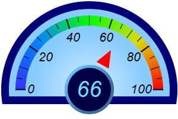
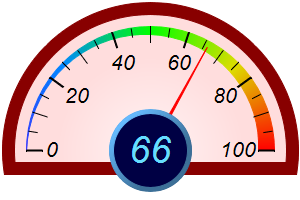

This example demonstrates semicircle meters configured with a large pointer cap to display the meter value.
The pointer cap is the circular object at the center of the meter. In this example, using
AngularMeter.setCap2, the pointer cap is set to an exceptionally large size so that it can act as a place to display text. The text is added using
BaseChart.addText, centered at the meter center.
In one of the meters, the pointer is configured to be floating, which means the base of the pointer is not fixed at the meter center. The pointer looks like a triangle somewhere between the center and the perimeter, pointing to the meter value. This pointer is added using
AngularMeter.addPointer2 with
TriangularPointer2 just like a standard pointer, but with additional arguments to specify the radial position of the pointer base and tip, as well as the pointer width.
The following is the command line version of the code in "cppdemo/semicirclemeterreadout". The MFC version of the code is in "mfcdemo/mfcdemo". The Qt Widgets version of the code is in "qtdemo/qtdemo". The QML/Qt Quick version of the code is in "qmldemo/qmldemo".
#include "chartdir.h"
void createChart(int chartIndex, const char *filename)
{
// The value to display on the meter
double value = 66;
// The background and border colors of the meters
int bgColor[] = {0x88ccff, 0xffdddd};
const int bgColor_size = (int)(sizeof(bgColor)/sizeof(*bgColor));
int borderColor[] = {0x000077, 0x880000};
const int borderColor_size = (int)(sizeof(borderColor)/sizeof(*borderColor));
// Create an AngularMeter object of size 300 x 200 pixels with transparent background
AngularMeter* m = new AngularMeter(300, 200, Chart::Transparent);
// Center at (150, 150), scale radius = 124 pixels, scale angle -90 to +90 degrees
m->setMeter(150, 150, 124, -90, 90);
// Background gradient color with brighter color at the center
double bgGradient[] = {0, (double)(m->adjustBrightness(bgColor[chartIndex], 3)), 0.75, (double)(
bgColor[chartIndex])};
const int bgGradient_size = (int)(sizeof(bgGradient)/sizeof(*bgGradient));
// Add a scale background of 148 pixels radius using the background gradient, with a 13 pixel
// thick border
m->addScaleBackground(148, m->relativeRadialGradient(DoubleArray(bgGradient, bgGradient_size)),
13, borderColor[chartIndex]);
// Meter scale is 0 - 100, with major tick every 20 units, minor tick every 10 units, and micro
// tick every 5 units
m->setScale(0, 100, 20, 10, 5);
// Set the scale label style to 15pt Arial Italic. Set the major/minor/micro tick lengths to
// 16/16/10 pixels pointing inwards, and their widths to 2/1/1 pixels.
m->setLabelStyle("Arial Italic", 16);
m->setTickLength(-16, -16, -10);
m->setLineWidth(0, 2, 1, 1);
// Demostrate different types of color scales and putting them at different positions
double smoothColorScale[] = {0, 0x3333ff, 25, 0x0088ff, 50, 0x00ff00, 75, 0xdddd00, 100,
0xff0000};
const int smoothColorScale_size = (int)(sizeof(smoothColorScale)/sizeof(*smoothColorScale));
if (chartIndex == 0) {
// Add the smooth color scale at the default position
m->addColorScale(DoubleArray(smoothColorScale, smoothColorScale_size));
// Add a red (0xff0000) triangular pointer starting from 38% and ending at 60% of scale
// radius, with a width 6 times the default
m->addPointer2(value, 0xff0000, -1, Chart::TriangularPointer2, 0.38, 0.6, 6);
} else {
// Add the smooth color scale starting at radius 124 with zero width and ending at radius
// 124 with 16 pixels inner width
m->addColorScale(DoubleArray(smoothColorScale, smoothColorScale_size), 124, 0, 124, -16);
// Add a red (0xff0000) pointer
m->addPointer2(value, 0xff0000);
}
// Configure a large "pointer cap" to be used as the readout circle at the center. The cap
// radius and border width is set to 33% and 4% of the meter scale radius. The cap color is dark
// blue (0x000044). The border color is light blue (0x66bbff) with a 60% brightness gradient
// effect.
m->setCap2(Chart::Transparent, 0x000044, 0x66bbff, 0.6, 0, 0.33, 0.04);
// Add value label at the center with light blue (0x66ddff) 28pt Arial Italic font
m->addText(150, 150, m->formatValue(value, "{value|0}"), "Arial Italic", 28, 0x66ddff,
Chart::Center)->setMargin(0);
// Output the chart
m->makeChart(filename);
//free up resources
delete m;
}
int main(int argc, char *argv[])
{
createChart(0, "semicirclemeterreadout0.png");
createChart(1, "semicirclemeterreadout1.png");
return 0;
}
© 2023 Advanced Software Engineering Limited. All rights reserved.